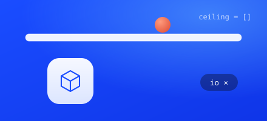
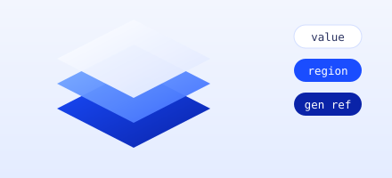
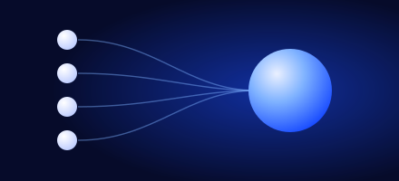

Code that can’t overstep.
Grasm is a systems language where a dependency cannot reach further than its manifest allows. Overstep, and it is a compile error.
Sneak one past the compiler.
A trusted math library ships a patch release. Add the line that reads a file, loosen the manifest, and watch four toolchains react.
[package] name = "mathlib" version = "1.0.1" capabilities = []
fn add(a: i64, b: i64) -> i64 { a + b }
The same attack, four toolchains
A trusted pure library’s 1.0.1 starts reading
/etc/passwd. scripts/security_bench.sh runs it
against four toolchains on every green build. Three of them ship it.
This is the reason the language exists. xz-utils, event-stream, SolarWinds: the attack is always the same shape, and the answer everywhere else is a runtime sandbox or a human reading the diff. Here it is a type error.
Three ideas. One language.
They were built to compose. Each one closes a hole the other two leave open.

Capabilities
A package states the effects it may perform. Exceed it, and the build fails in every consumer. Not in review. Not at run time.

Ownership in tiers
Values by default. A region when a scope owns its allocations. A generational reference when a graph needs one. No lifetime annotations, anywhere.

Four engines, one answer
Interpreter, bundle, ahead-of-time native, and wasm. Instant feedback while you build, a binary when you ship, the same program in a browser.
Four engines.
One answer.
Develop against the interpreter, ship a native binary, run the same program in a browser. The interpreter is normative; the other three have to match it byte for byte.
fn main() { print("hello from grasm") }
engine and both architectures
Effects live in the type.
You never write the row. The compiler infers it from the body and checks it against what you declared. Touch the network, and the function stops compiling — along with every caller that was not given the same permission.
! MathError
A failure the caller must handle./ {io}
A permission the caller must have.Honest numbers.
11 measurable goals, 13 rows once 2 of them split in half. 9 are met, 2 are over by 4% and 2%, and 2 cannot be read at all without users. The scorecard puts every qualification beside its number rather than underneath it.